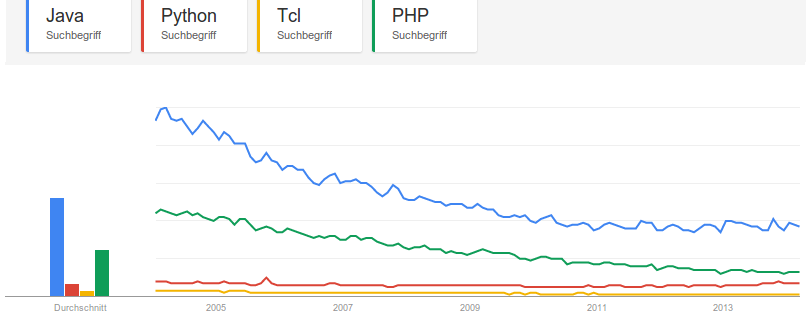

TCL is an imperative, interpreted, dynamically typed programming language. The Tool Command Language appeared in 1988. In Tcl, everything is a string.
It is probably best (and completely?) described by the 12 Rules for Tcl.
Basic Syntax by Example
Some nice comparisons of the syntax of many languages can be found at rigaux.org
Hello World
set myVariable "Hallo World!"
puts $myVariable
Loop over a list
% foreach element {1 2 3} {
puts $element
}
Fibonacci
proc fib {n} {
if {$n < 2} {
return $n
} else {
return [expr {[fib [expr {$n-2}]] + [fib [expr {$n-1}]]}]
}
}
for {set x 0} {$x<10} {incr x} {
puts [fib $x]
}
Comments
TCL uses # as a line comment and does not offer block comments. In fact, they
recommend this:
if 0 {
Any Tcl code to be commented out (with matching braces, of course!)
or any other kind of text, will be ignored - and even [exit] won't fire
because it's in braces, so left unevaluated!
}
Source: wiki.tcl.tk/1669
Logical operators
| AND | OR | TRUE | FALSE |
|---|---|---|---|
| && | || | 1 | 0 |
| EQUAL | UNEQUAL | NOT | |
| == | != | ! |
99 bottles of beer
#!/usr/bin/tclsh
# 99.tcl; Tcl version of 99 Bottles of Beer Song
proc findBString { count } {
return [switch -exact -- $count {
0 { expr {"No more bottles"} }
1 { expr {"1 bottle"} }
default { expr {"$count bottles"} }
}]
}
set bottles 99
set bString [findBString $bottles]
while {$bottles + 1} {
puts "$bString of beer on the wall. $bString of beer."
incr bottles -1
if {$bottles + 1} {
set bString [findBString $bottles]
puts "Take one down, pass it round, $bString of beer on the wall.\n"
} else {
puts "Go to the store and buy some more...99 bottles of beer."
}
}
Source: 99-bottles-of-beer.net
Argument parsing
See itfParseArgv
Naming schemes
- Variables have to fit to the pattern
[_a-zA-Z][_a-zA-Z0-9]*. - Functions have to fit to the pattern
[^ \t\n\r\f]+. - Variables and function are scrunched together by camelCase or CamelCase.
Community
I think one indicator for the quality of the community is it's size. And the community will grow, when the language gets more popular.
According to Ohloh, TCL is quite unpopular:
-
Monthly Commits
-
Monthly Contributors
-
Monthly Lines of Code
-
Monthly Projects
{kind=link}
{kind=link}
{kind=link}
{kind=link}
You can also take a look at Google Trends:
{kind=link}

- The TIOBE Index ranked Tcl on place 43 in March 2014.
- lang-index ranked Tcl on place 84 in the general category and on place 34 in the script category.
- There are 2,490 Tcl questions on StackOverflow. Compare that to 286,244 questions about Python or 609,648 questions about Java.
- Tcl is on rank 18 for GitHub (source).
Execution Speed
Speed comparisons of programming languages are difficult. One nice way to compare the execution speed of programming languages is the benchmarksgame. But sadly, they don't have TCL.